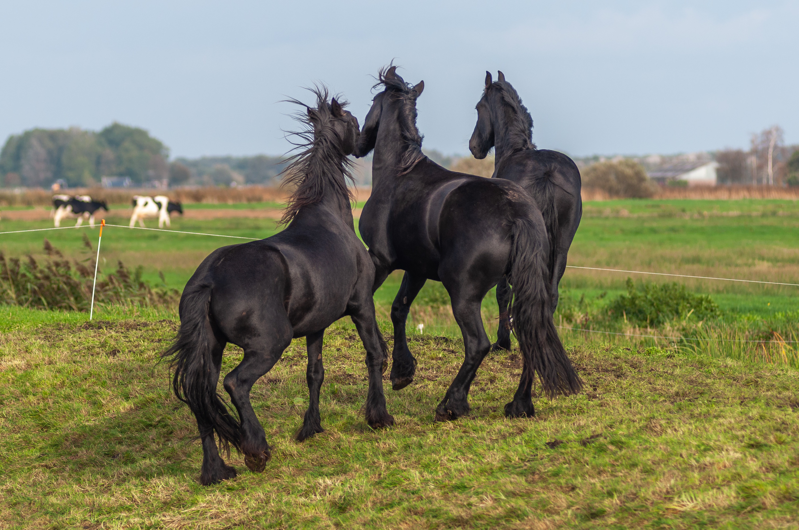
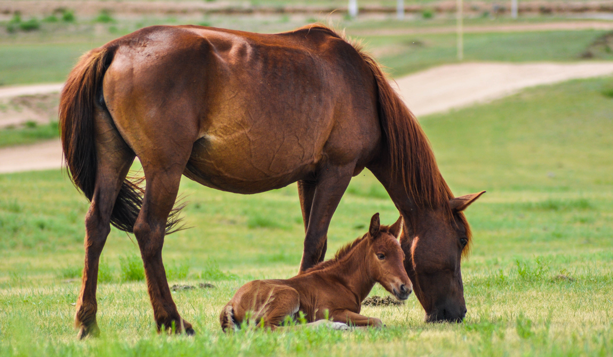
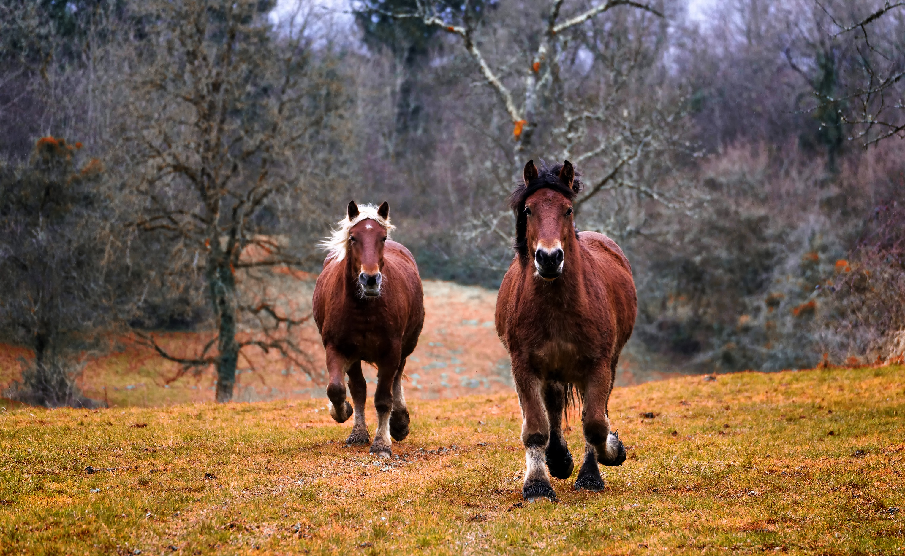
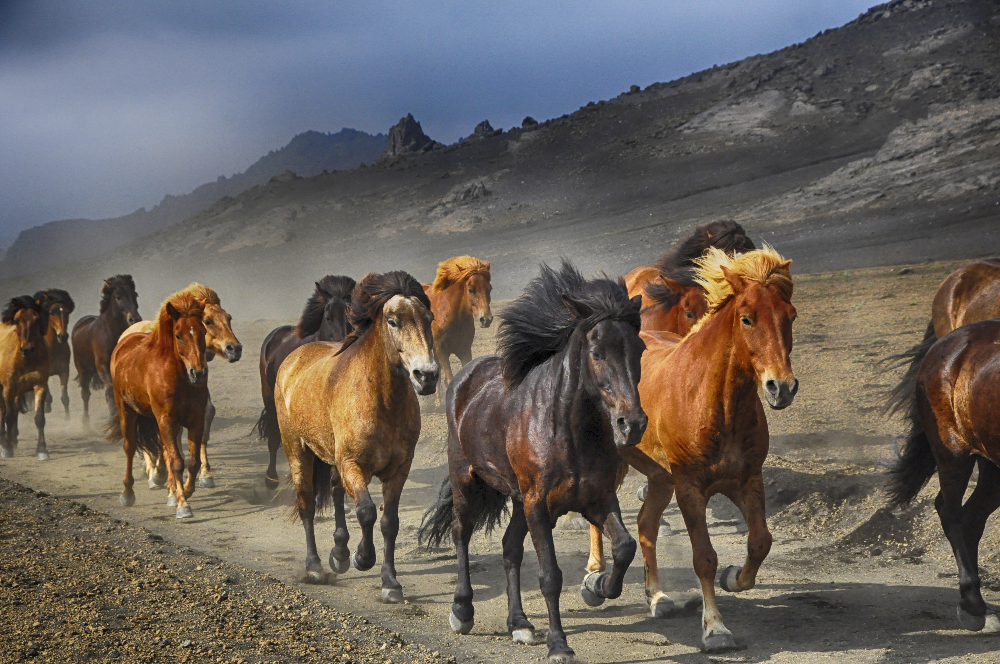
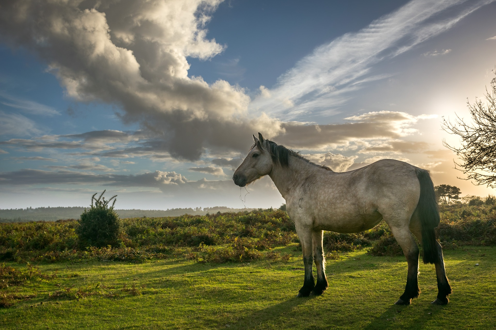

Équi-Qualité est un programme reconnu
Cheval Origine Québec
Un Cheval Origine Québec est défini par l'éleveur et / ou le lieu de naissance du poulain.
Devenir instructeur certifié
L'obtention de la certification est un important jalon de votre vie professionnelle.Votre titre d'instructeur certifié par Canada Équestre
Les 5 droits
Cheval Québec adhère au principe des Cinq droits des chevaux, émis par la FAWC et appliqués par le MAPAQ par le biais de la loi P42
Programme d'apprentissage
Le Programme d'apprentissage de l'équitation qui s'adresse à tous. Il est disponible en équitation classique (8 niveaux) et en équitation western (5 niveaux + brevets spécialisés dans 8 disciplines).




